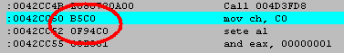
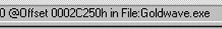
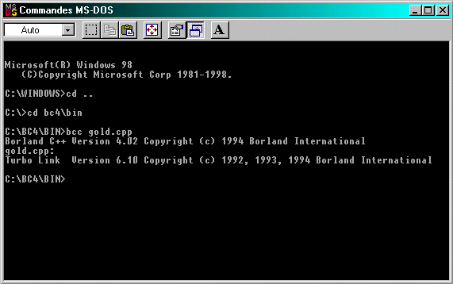

CREER UN PATCH EN C++
Ca y est, vous savez cracker ! c'est cool, mais comment faire pour distribuer vos cracks
sur le web. Eh beh oui sous forme de patch (petit programme qui crack sans avoir besoin
d'éditeur hexa etc...).
Mais oui mais les patchs on les faits comment ? On peut le faire avec des
programmes comme DCE mais c'est mieux si on le fait tout seul non.
C'est pourquoi j'ai essayé d'en faire un simple (en tout cas beaucoup plus simple que
ce que j'ai trouvé sur internet).
Il ne vérifie que la présence du fichier et il patche sans se poser de question.
Simplifié quoi ?
Tout d'abord il vous faut un compilateur c++ .
Je décrirais toute la compilation pour borland c++ 4 (pas le builder).
Vous commencez par écrire le listing dans un fichier .txt que vous renommez
en .cpp .
Après on essaie de comprendre le listing .
-------------------------------------------------------------------------
#include <stdio.h>
main()
{
int counter;
FILE *filename;
long int offset[5] = {180816,180817,180818,180819,180820};
unsigned char data[5] = {176,1,144,144,144};
printf("CRACK DE GOLDWAVE 4.02 PAR LASTEZ \nOUVERTURE DU FICHIER: ");
if ((filename = fopen("GOLDWAVE.EXE", "r+")) != NULL)
{
printf("OK!\nCRACK DU FICHIER: ");
for (counter=1;counter<6;counter++)
{
fseek(filename,offset[counter-1],SEEK_SET); //on va a l'offset
fprintf(filename,"%c",data[counter-1]); //on patche
}
printf("OK!\nþ PATCH REUSSI ! FAITES DU BON SON !\n");
}
else
{
printf("FICHIER NON TROUVE :-((\n");
}
return 0;
}
-------------------------------------------------------------------------
Il vous faudra deja un petite connaissance en c++, ce serait mieux.
(lisez le zine 1, ca sera deja pas mal)
Je vais pas m'attarder sur l'explication ça serait trop long si vous avez
aucune connaissance en c++. Le listing est un patch pour goldwave, le tut
est présent dans le zine.
Tout ce que vous avez a faire c'est relevez les offsets de la ou vous voulez
cracker et les octets a changer.
Sous w32dasm :
les octets qu'on doit patcher :

Dans le tut on avait dit qu'on les patchait en :
b001
909090
ensuite les offsets : (regardez en bas de w32dasm)

Ensuite vous convertissez tout ça en décimal.
Nos offsets a patcher étaient donc 2c250,2c251,2c252,2c253,2c254
Vous prenez une calculette (celle de windows fait l'affaire) et convertissez
tous ça de l'hexa au décimal
ça nous donne : 180816,180817,180818,180819,180820
Ensuite on convertit b0,01,90,90,90 en decimal.
ça nous donne :176,1,144,144,144
Y a plus qu'a écrire le prog en marquant :
long int offset[5] = {180816,180817,180818,180819,180820}
le 5 est le nombre d'offsets.
Et :
unsigned char data[5] = {176,1,144,144,144};
le 5 est le nombre d'octets.
Puis a la ligne :
for (counter=1;counter<6;counter++)
changez le 6 par le nombre d'offsets (ou d'octets ça revient au meme) +1
Voila reste plus qu'a compiler.
Pour ça on installe borland c++ 4 et on met le fichier source dans :
c:\bc4\bin
Puis on fait comme sur l'image dans un fenetre dos :

il ne vous reste plus qu'a personnaliser vos commentaires et a distibuer
le tout.
Voila, si vous avez des questions, ou autre chose contactez moi:
hccc@caramail.com
www.multimania.com/hccc
TiPiaX